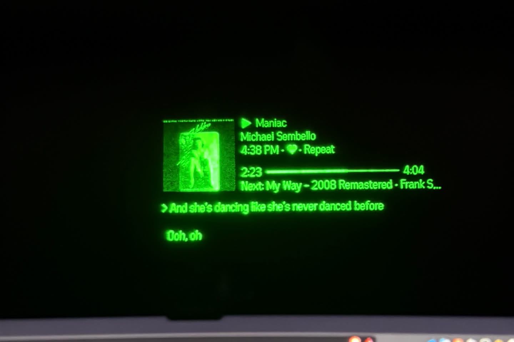
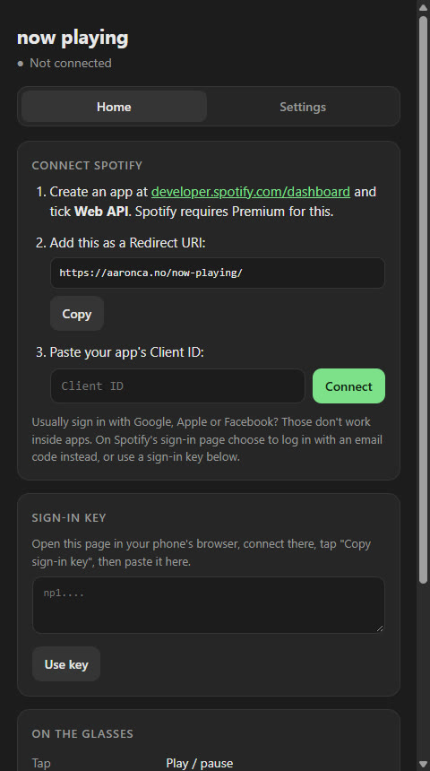

what it does
The glasses show the current song, artist, progress, what's up next, and lyrics that scroll in sync. Tap to play/pause, swipe for next/restart/previous, double-tap for a menu that reaches the entire library — playlists, albums, artists, podcasts, the queue, spotify connect device switching, volume, seek. It runs inside the even realities phone app and deploys straight from github pages; you sideload it onto the glasses with a QR code.

everything that fought back
This project is mostly a list of platform fights, each with a workaround shipped:
5-user capSpotify development-mode apps max out at 5 users, so every user brings their own free spotify app and connects it with PKCE — no shared secret anywhere.oauth in a webviewGoogle/apple/facebook sign-in is blocked inside the even app's webview, so there's a "copy sign-in key" escape hatch: connect in your phone's real browser, carry the key across.lyricsSpotify's own lyrics ride a private endpoint that would break ToS, so lyrics come from LRCLIB, a community database, with LRC timestamps binary-searched for the current line.liked songsCan't be played as one context via the API, so shuffle plays a random 50-song stretch instead. Documented limitation, not a bug. Mostly.hardwareSwipes don't report which arm of the glasses they came from, but taps do — so tap actions are configurable per arm and swipe actions aren't.

album art in 16 shades of green
The display is monochrome green with 16 luminance levels. Naively mapping album covers onto that comes out muddy, so the art pipeline crops, contrast-stretches, then runs Floyd-Steinberg dithering to fake smooth gradients out of 16 shades. There's also a retry budget: after three straight failed cover downloads it stops trying, because a music app that hammers a dead CDN is worse than one with no art.
Text has its own pipeline — titles get sanitized for the glasses' font, and pixel widths are estimated from measurements taken off simulator screenshots via a purpose-built calibration page. You know a display is weird when you need a calibration page.
testing it without glasses on
The part i'm proudest of: a stateful mock of the spotify API, including spotify's real propagation delay before it reports your own changes back to you. End-to-end scenarios run against the simulator and inject faults — rate limiting, 502s, a request that simply never answers, an expired token racing a rotated refresh token. The glasses are the one place you really don't want to debug a hang.
stack
- app
- Typescript + vite, ~2,500 lines. Two surfaces from one codebase: the phone webview UI and the glasses render loop.
- apis
- Spotify web API (PKCE oauth), LRCLIB for lyrics, the even realities G2 bridge.
- deploy
- Github pages via actions on every push; the hosted build is the sideload target.
- status
- Live — it's what's on my glasses right now.